Why ignite from the head end
The Aerodynamics Division flies commercial solid motors and chases altitude through the design of the rocket around them. This year’s design is sub-minimum diameter, which means the motor case itself is the outside of the rocket. Igniter wires normally run between the motor case and the body tube. With the case exposed there is nowhere to route them.
Head end ignition solves that by bringing the igniter leads through the forward closure, straight into the top of the motor.
The rocket will fly on an M3464. The L1482 is a smaller motor that we used only to prove the build on the ground.
A proven design, built carefully
The method is not ours. I researched how other flyers had solved the problem and found that Loki Research supports head end ignition on its own hardware. Loki’s owner described to our team how they modify the closure’s smoke grain insert, a method they have used many times. Our job was to reproduce it accurately and then prove our build with our own tests. My division lead helped me throughout.
What we built
The feedthrough takes the place of the tracking smoke grain that normally sits in a well on the chamber side of Loki’s forward closure. We kept the smoke grain’s phenolic insert, ran the igniter wires through it, and filled it with Loctite EA E-60NC structural epoxy. I drilled a hole through the forward end of the closure for the leads to exit.
- Grooves for the epoxy. I machined V-grooves into the bore of the insert to give the epoxy a mechanical grip on the phenolic.
- O-rings on the insert. The insert came with its outer O-ring grooves already machined. The O-rings seal the insert to the closure, so the wire hole needs no seal of its own.
- Bare wire in the epoxy. The wires are stripped where they pass through the epoxy. My sub-team members designed and 3D-printed jigs, under my supervision, that kept the epoxy on that stripped section and held it in place while it cured.
The epoxy went in over several pours. After it cured we confirmed electrical continuity through both leads.

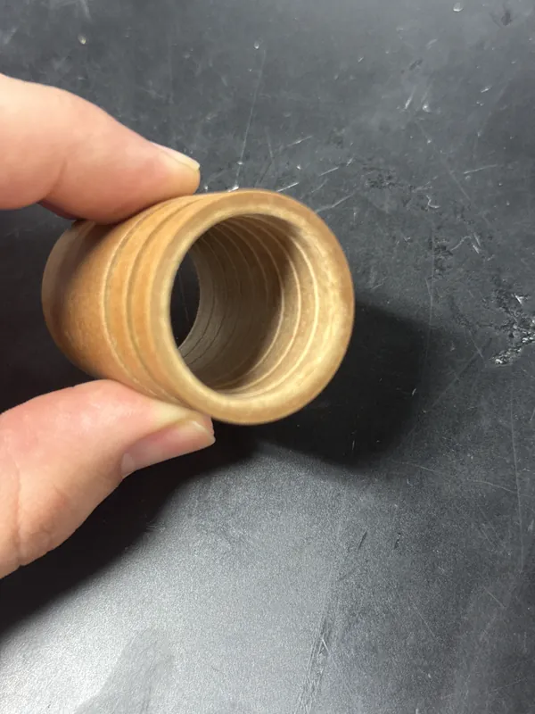

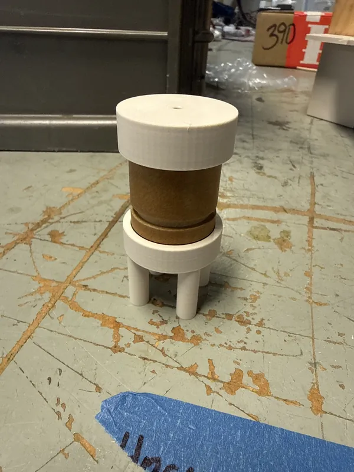

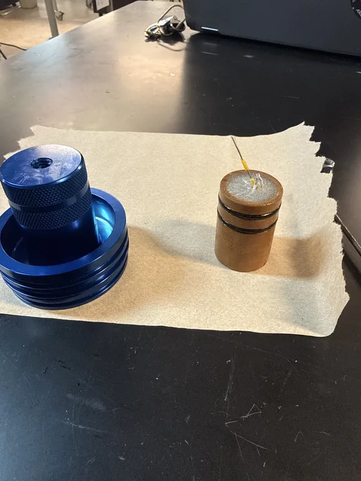

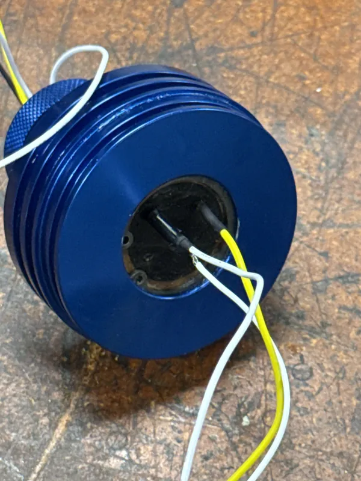

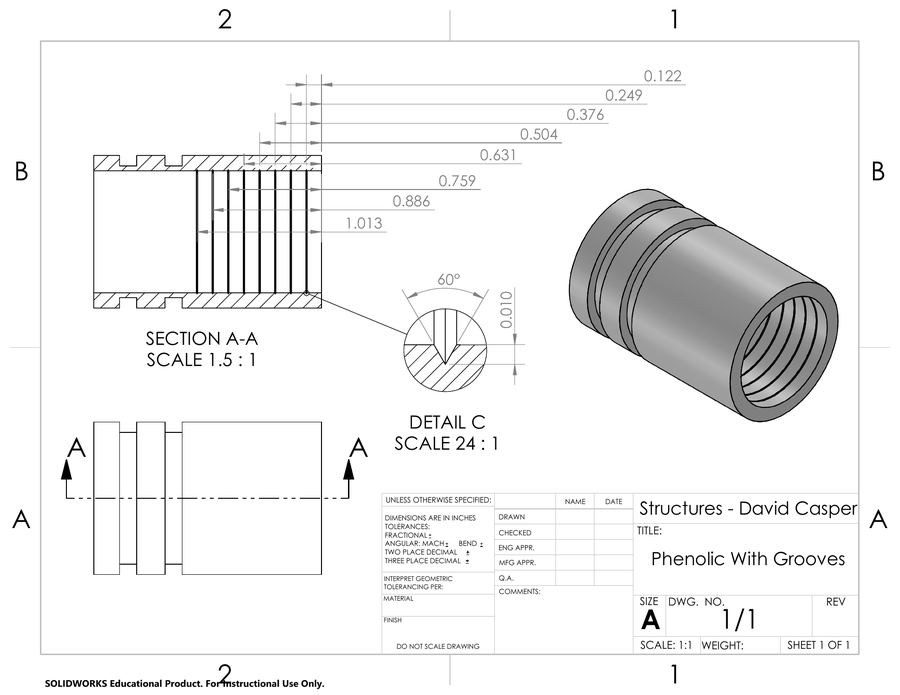
Proof test before fire
Before putting propellant behind the modified closure, we pressure tested the assembled case with water. I machined an aluminum plug to stand in for the nozzle, and the case held 1,300 psi for one minute with no leaks. The igniter leads still had continuity afterwards.
The hot fire
On Saturday, November 14, 2026 we fired the motor at the Tripoli launch site in Hearne, Texas. It was the first hot fire the Aerodynamics Division has run. I wrote the test procedure and served as test lead: I directed my sub-team members through the setup, installed the igniters, and gave the final go.
The motor stood vertically with its nozzle pointing up, on a test stand bolted to a trailer. A graduate student built the stand and its data acquisition system for their master’s project. A load cell under the motor took the thrust. Two thermocouples were taped to the hardware at the forward closure end, and a thermal camera watched the same area. An Arduino and a laptop logged the sensors.

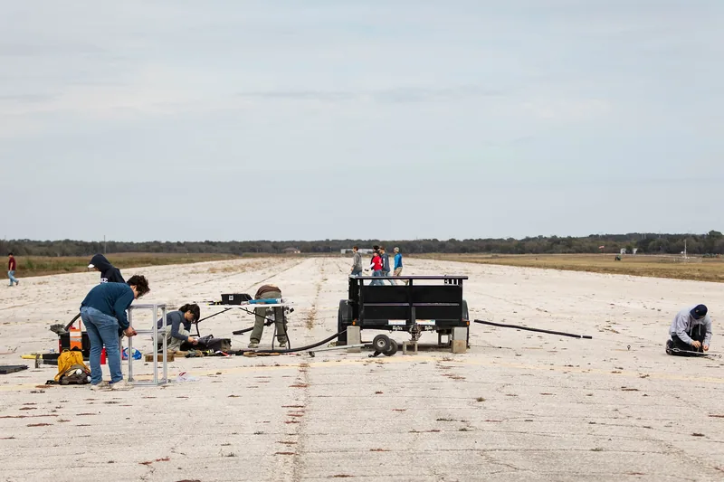

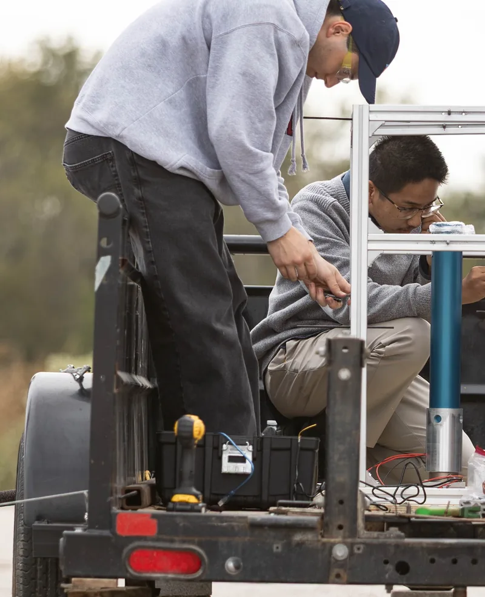
The ignition leads ran through the forward closure, down the core of the motor and out the nozzle. At the stand I crimped a main and a backup igniter to those ends and fed them back down the nozzle until they sat at the head end of the propellant. With everyone else 300 ft back, we connected the leads on the closure side to Tripoli’s pad leads and walked back to the line. Tripoli’s launch control then fired the motor through the closure.

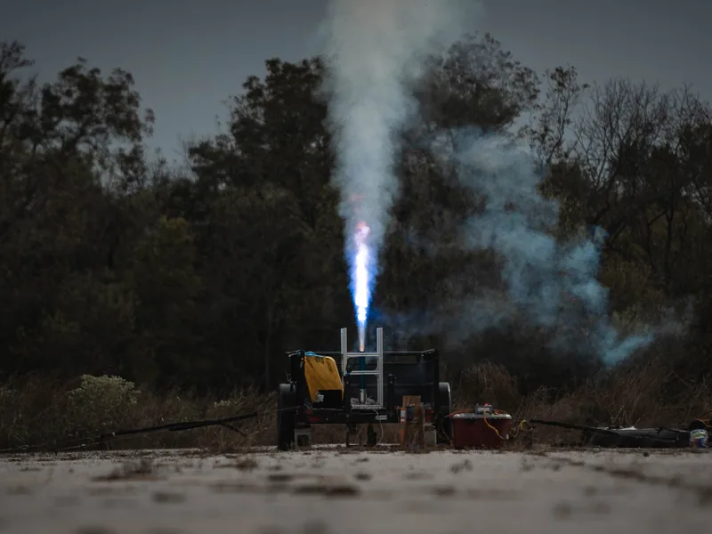

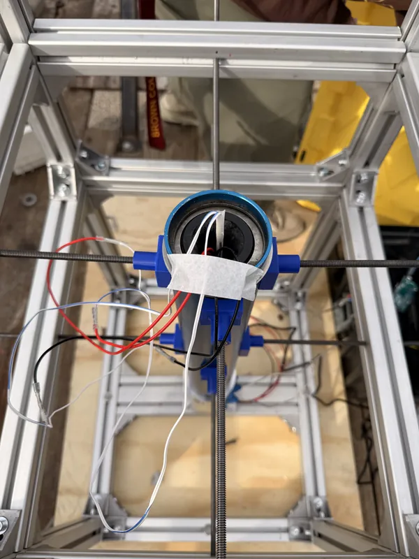

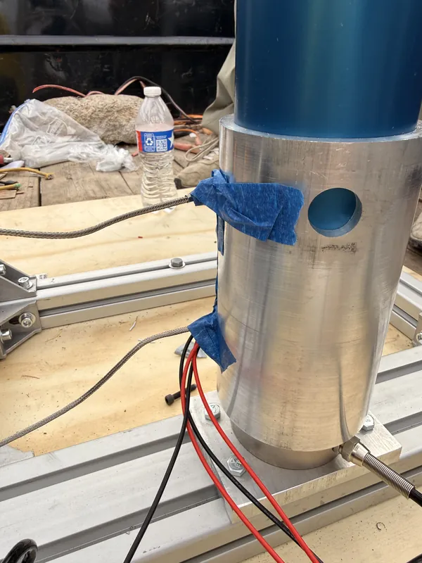

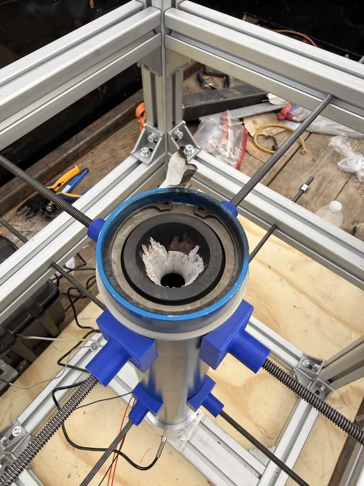
Results
- 2.5s
- Burn duration from the load cell log
- < 1°C
- Change at the forward closure thermocouples during the burn
- None
- Soot past the forward closure or melted wires at teardown
The question for this test was whether the forward closure would stay sealed. A leak past the potted insert would send hot gas forward and show up as a fast temperature rise. Both thermocouples stayed within 1 °C of where they started through the whole burn. Over the next seven minutes they climbed by about 6 °C and 4 °C as heat soaked through the hardware, which is the slow rise that conduction produces.
The thermal camera footage showed no hot gas leakage either. When we took the motor apart the next day, there was no soot past the forward closure and the wires had not melted.
Temperatures at the forward closure stayed flat through the burn
Two thermocouples taped to the adapter at the forward closure end of the motor
Thermocouple 1Thermocouple 2
Fig. 13 Thermocouple readings from the test log, shown as a 5 second moving average. The log ends 7.7 minutes after ignition.
View data table
| Time from ignition (min) | Thermocouple 1 (°C) | Thermocouple 2 (°C) |
|---|---|---|
| −4.0 | 23.1 | 22.6 |
| −3.5 | 23.2 | 22.8 |
| −3.0 | 23.1 | 23.0 |
| −2.5 | 23.1 | 23.1 |
| −2.0 | 23.0 | 23.1 |
| −1.5 | 23.2 | 23.4 |
| −1.0 | 23.2 | 23.2 |
| −0.5 | 23.4 | 23.3 |
| 0.0 | 23.3 | 23.0 |
| 0.5 | 23.5 | 23.4 |
| 1.0 | 23.9 | 24.6 |
| 1.5 | 24.5 | 25.0 |
| 2.0 | 25.1 | 25.2 |
| 2.5 | 25.7 | 25.5 |
| 3.0 | 26.4 | 25.9 |
| 3.5 | 26.8 | 26.2 |
| 4.0 | 27.0 | 26.0 |
| 4.5 | 27.6 | 26.5 |
| 5.0 | 28.0 | 26.7 |
| 5.5 | 28.1 | 26.6 |
| 6.0 | 28.4 | 26.6 |
| 6.5 | 28.3 | 26.4 |
| 7.0 | 28.6 | 26.6 |
| 7.5 | 28.6 | 26.4 |
The load cell had not been calibrated to force units, so I show its trace as a share of its own peak, next to Loki’s published curve for the same motor scaled the same way. The signal reached 78% of its peak within 0.1 s of ignition, peaked 1.5 s in, and the burn lasted 2.5 s. Loki’s data file shows a 2.5 s burn.
The motor burned for 2.5 seconds, as Loki’s data predicts
Our load cell reading beside Loki Research’s published thrust curve, each as a share of its own peak
Our hot fire (load cell)Loki’s published curve
Fig. 14 Our trace is the load cell signal from the test log, sampled at about 86 Hz. The load cell was not calibrated to force units, so the trace is normalized to its own peak after subtracting the pre-burn baseline. Loki’s curve is the L1482 data file published on ThrustCurve.org (peak 1,759 N), scaled the same way. Because our signal has no force units, the comparison shows timing and shape, not thrust.
View data table
| Time from ignition (s) | Our signal (% of peak) | Loki curve (% of peak) |
|---|---|---|
| −0.3 | 0.1 | 0.0 |
| −0.2 | 0.1 | 0.0 |
| −0.1 | 0.1 | 0.0 |
| 0.0 | 12.6 | 0.0 |
| 0.1 | 78.2 | 72.7 |
| 0.2 | 79.9 | 76.7 |
| 0.3 | 83.2 | 80.7 |
| 0.4 | 86.1 | 84.7 |
| 0.5 | 88.0 | 88.3 |
| 0.6 | 90.0 | 88.4 |
| 0.7 | 91.7 | 88.6 |
| 0.8 | 93.1 | 88.8 |
| 0.9 | 94.4 | 89.0 |
| 1.0 | 95.9 | 89.2 |
| 1.1 | 97.1 | 89.4 |
| 1.2 | 98.2 | 89.6 |
| 1.3 | 99.0 | 89.8 |
| 1.4 | 99.7 | 90.0 |
| 1.5 | 100.0 | 90.2 |
| 1.6 | 99.9 | 90.4 |
| 1.7 | 99.5 | 90.6 |
| 1.8 | 99.2 | 90.8 |
| 1.9 | 98.9 | 91.0 |
| 2.0 | 98.2 | 91.2 |
| 2.1 | 97.1 | 90.9 |
| 2.2 | 94.9 | 90.7 |
| 2.3 | 93.1 | 90.4 |
| 2.4 | 95.1 | 91.1 |
| 2.5 | 23.7 | 37.2 |
| 2.6 | −1.9 | 0.0 |
| 2.7 | −2.2 | 0.0 |
| 2.8 | −2.2 | 0.0 |
| 2.9 | −2.1 | 0.0 |
| 3.0 | −2.2 | 0.0 |
What comes next
The hot fire validated our head end ignition build. The same closure also has to carry structural load, and I’m designing the coupler that threads onto it.